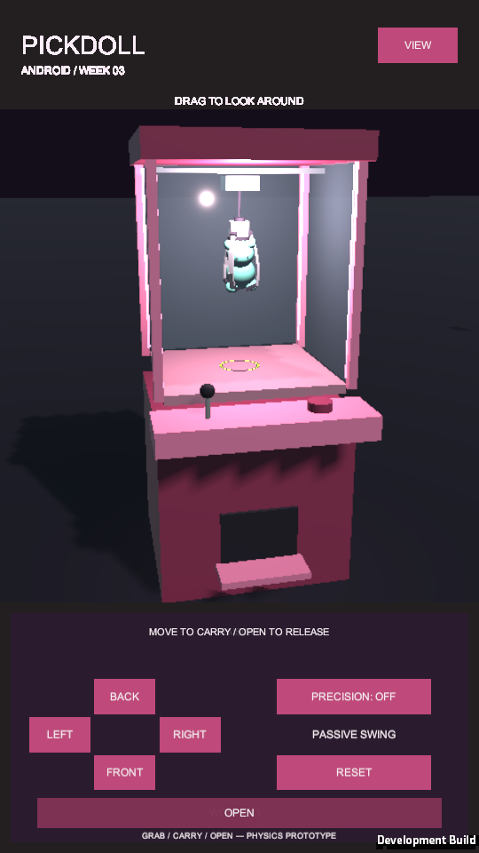
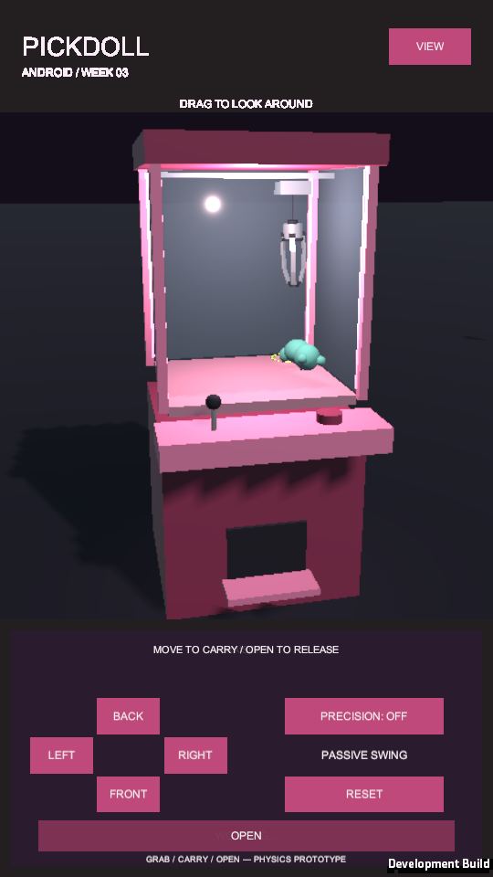
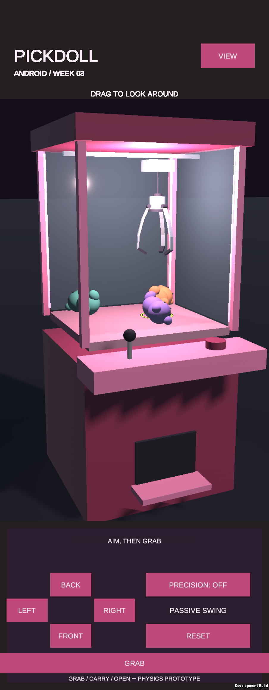

움직임에 반응하는 집게,
구석까지 닿는 조작.
약속한 네 가지 개선
하강 중 수평 이동
GRAB 후에도 방향과 PRECISION 조작을 받아 하강 위치를 조정한다. 닫힘·상승·열림 중에는 수평 조작을 잠그고, 상승 후 수동 운반한다. 방향은 기계 정면 기준이다.
수동 회전 대신 물리 관성
TURN 버튼과 Z·X 입력을 없애고 동적 집게를 승강 지지점에 관절로 매단다. 직선 가감속·방향 반전·원형 이동에 따라 회전하고 흔들리며, 정지하면 감쇠한다. 정해진 흔들림 애니메이션은 쓰지 않는다.
가는 곡선형 집게
원통형 하우징·관절 핀·여러 곡선 구간의 가는 손가락·고무 끝단으로 투박한 형태를 개선했다. 보이는 형상을 따라 구간별 충돌체를 배치한다. 실제 제품은 형태 참고 자료이며 자체 형상으로 제작했다.
벽·모서리 접근
중심 이동 범위를 ±0.18m → ±0.345m로 확대했다. 기본 벌림은 25도에서 18도로 줄여 인형을 덜 밀고, 놓을 때는 더 넓게 연다. 벽 충돌과 세 손가락의 독립 관절을 유지한다.
최종 실행 화면


검증 상태
최종 Windows 플레이어 검사 PASS. 하강 중 이동·수동 회전 버튼 제거·직선 반전 및 원형 흔들림·정지 후 감쇠·빈 집게 세 손가락 닫힘·RESET을 확인했다. 중앙·네 벽·네 모서리의 단일 조준 9회에서 6회 들어 올렸으며, 들어 올린 인형은 모두 OPEN 후 바닥으로 낙하했다. 중앙의 미세 이동 운반도 유지됐다. 모든 위치에서 인형은 벽 안쪽에 남았다.
APK 빌드·v2 서명 검증 통과. 폴드5 SM-F946N에 0.3.0(code 3) 설치·실행 완료. 사용자가 하강 중 이동·집기·OPEN·흔들림 정상 동작을 확인했다. 외부 화면을 캡처했으며, 이번 버전의 접기·펼치기 전환은 별도 재검증 대상이다.

APK SHA-256: 85bbdd4c581dd393501b3a2f5932aa89c04fddcf628b1cb6bcb7e3a60a19c295
파일 크기: 59654551 bytes
6/9는 지정한 배치·한 번의 조준에서 얻은 결과이며 승률 보장 수치가 아니다. 벽·구석 접근과 물리 집기는 가능해졌지만, 일부 구석의 조준·접촉에 따른 실패는 남아 있다. 4주차에는 구석 재시도·흔들림·속도·그립의 일관성을 안정화한다. 인형이 닿으면 각 손가락의 닫힘 각도는 달라질 수 있다.
최종 Windows 실행 검사 원문
PASS no_manual_turn_buttons=True lowering_move=True straight_reversal_swing=True; peakTilt=24.86 circular_swing=True; peakTilt=28.14; yaw=277.2; angularMoving=4.215; settled=2.209 slot 0 (0.00, 0.00): lift=True; y=1.609; multiple_closed=True; contained=True; angles=-6.1,-14.0,0.4 center_carry=True release=True slot 1 (-0.33, -0.33): lift=False; y=1.185; multiple_closed=True; contained=True; angles=-19.7,-19.6,-19.6 release=True slot 2 (0.33, -0.33): lift=False; y=1.265; multiple_closed=True; contained=True; angles=-19.6,-19.5,-19.7 release=True slot 3 (-0.33, 0.33): lift=True; y=1.567; multiple_closed=True; contained=True; angles=-5.1,-18.4,-10.1 release=True slot 4 (0.33, 0.33): lift=False; y=1.185; multiple_closed=True; contained=True; angles=-19.6,-19.7,-19.7 release=True slot 5 (-0.34, 0.00): lift=True; y=1.631; multiple_closed=True; contained=True; angles=-7.2,-19.3,-10.0 release=True slot 6 (0.34, 0.00): lift=True; y=1.603; multiple_closed=False; contained=True; angles=0.9,-3.1,-7.4 release=True slot 7 (0.00, -0.34): lift=True; y=1.624; multiple_closed=True; contained=True; angles=-15.2,-8.2,-10.3 release=True slot 8 (0.00, 0.34): lift=True; y=1.599; multiple_closed=False; contained=True; angles=-0.6,-2.9,-4.7 release=True lifted_locations=6/9 (geometry-dependent; wall contact retained) empty_all_fingers_closed=True reset=True
실행 방법
방향키·방향 버튼: 이동 / Shift·PRECISION: 미세 이동 / Enter·Space·GRAB: 내려 집기 / 상승 후 OPEN: 놓기 / R·RESET: 초기화 / 드래그·VIEW: 시점. 수동 회전은 없다.
Windows: Unity/Builds/Week03/Windows/PickDoll.exe
Android: Unity/Builds/Week03/Android/PickDoll-week03.apk
씬: Assets/PickDoll/Scenes/Week03.unity
빌드·검사: Unity/tools/Run-Unity.ps1 -Week 3 -Task Generate|Validate|Windows|Android. 실제 Windows 물리 검사는 --pickdoll-week03-test 인자를 사용한다.
해석과 다음 확인
- 검사는 지정한 초기 배치와 조준의 결과다. 모든 플레이에서 성공을 보장하지 않는다. 집은 인형을 붙이거나 강제로 떨어뜨리는 처리는 없다.
- 매달림은 0.14m 강체 관절 근사, 기울기는 두 축에 약 28도 제한, 수직축 회전은 자유다. 실제로 휘는 줄·연체 인형은 구현하지 않았다.
- 4주차에는 실기기 피드백에 따라 흔들림·속도·그립을 안정화한다. 자동 복귀·하부 배출·획득은 5주차, 저장과 7개 랜덤 배치는 6주차다.
- Windows 기본 품질을 모바일과 맞춰 SSAO 리소스 누락으로 화면이 가려지는 문제를 수정했다. 0.3.0에서도 AssetPackManager 클래스 누락 시작 로그를 관찰했다. 앱 화면·사용자 조작은 정상 확인했으며, 공개 출시 전 원인 해결·재검증 대상이다.
디자인 참고
Smart Industries 실제 크레인 제품 · Coastal Amusements Show Time 사용자 매뉴얼